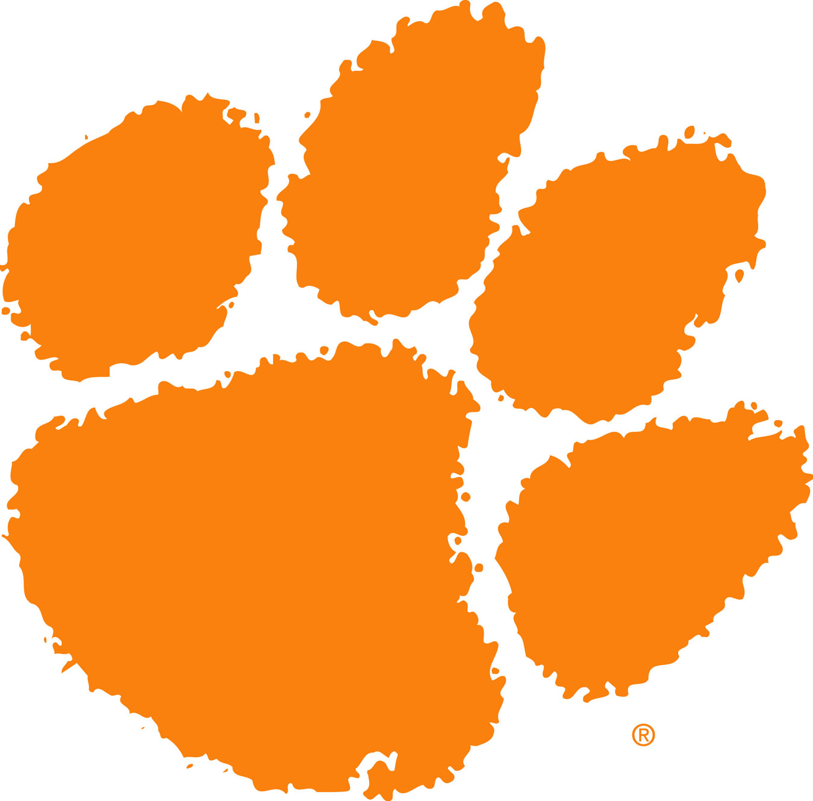
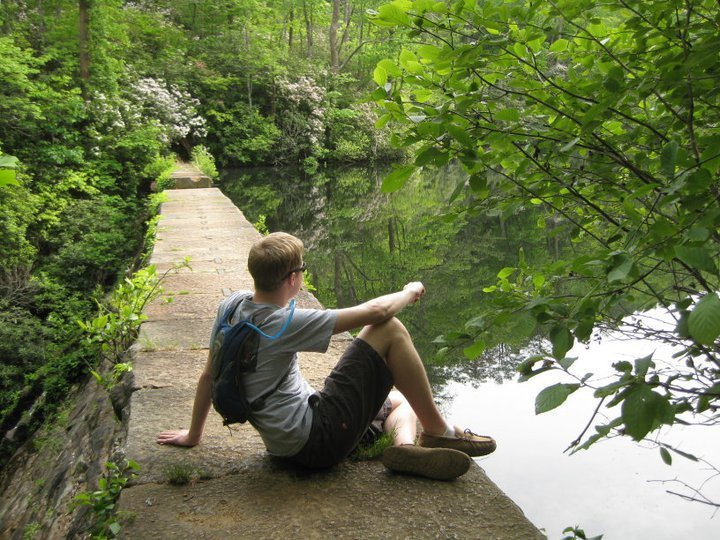
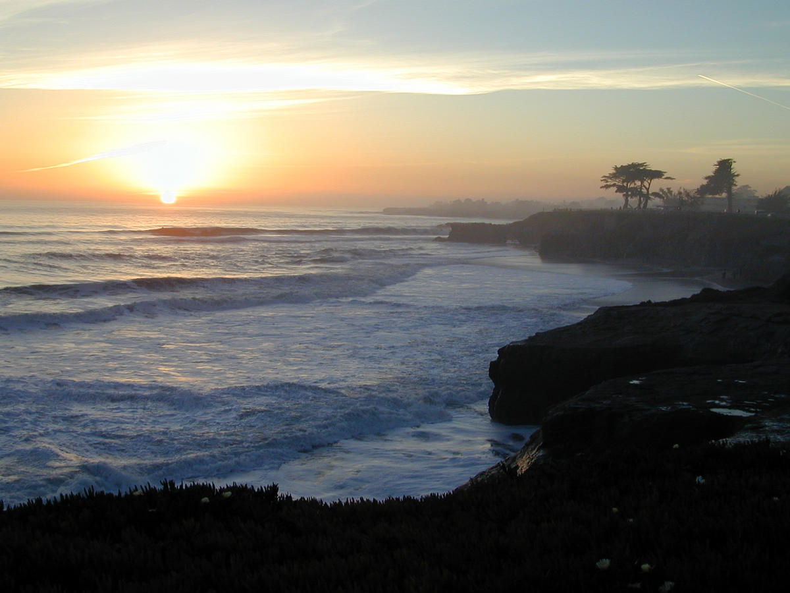
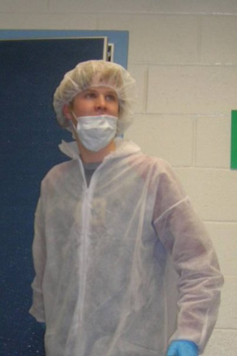
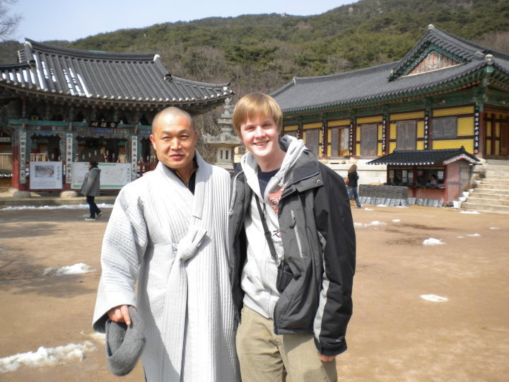
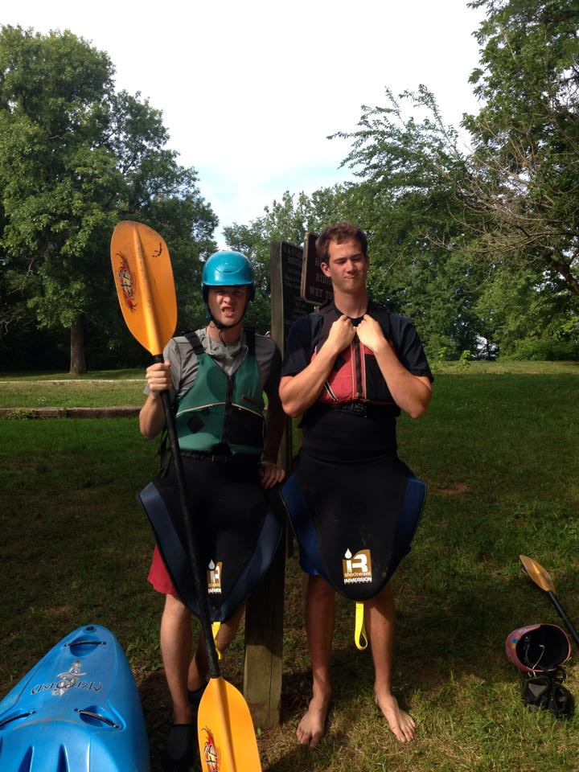

Ed Sullivan
PhD student
Security and Cryptography Group
Computer Science and Engineering Department
University of California, San Diego
Cell: (209) u-jammin
Email: ∑L$μLL¡V @cs.ucsd.edu
Advisors: Stefan Savage, Kirill Levchenko,
and Hovav Shacham
I'm currently getting my PhD in computer science at UC San Diego. Specifically, I'm interested in security. As part of the Aerosec research team, I helped reverse engineer and analyze "The Security of Mobile Cockpit Information Systems" used for navigation in airplanes. My other research involves entropy and random number generators. In my free time, I enjoy competing in Capture The Flag competitions on UCSD's team (SIGINT), playing ultimate frisbee, surfing, and dominating intramural flag football.
{kind=link}
At Clemson University in South Carolina, I studied computer engineering. As a student in the Clemson National Scholars Program, I travelled with my best friends through countries in Europe, Africa, and North America. My honors research with Dr. Richard R. Brooks involved "Avoiding Entropy-Based DDoS Detection."

After my freshman year in college, I studied abroad at the Cambridge University International Summer School. My favorite course that summer, and one of the most interesting courses I have ever taken, was a "History of the Scientific Revolution," taught by Piers Bursill-Hall.
I've always preferred being outside in nature, so for high school, I applied to join the Global Ecology Studies Program at Poolesville High School in Maryland. This four-year curriculum replaced traditional classes in the physical and social sciences with environmentally-themed counterparts. We went on field trips to riparian buffer zones, wind farms, old growth forests, recycling centers, trash incinerators, the Chesapeake Bay, water filtration centers, artificial whitewater centers, dams, the Capitol, historic sites, and more.

As a major proponent of environmental stewardship, I was thrilled to intern at the NASA Ames Sustainability Base in Mountain View, California for the summer of 2012. The Sustainability Base is a state-of-the-art LEED Platinum building that serves as a testbed for NASA-designed green technologies. Specifically, my project involved deploying a network of wireless sensors to measure temperature, light, and humidity so as to aid in the development of an integrated control system involving several software-controlled subsystems including HVAC, shades, windows, lights, and more.
While interning in the VLSI Design Automation Lab at UC Santa Cruz in the summer of 2011, I worked with Dr. Matthew Guthaus to research methods for reducing the power consumption of local resonant clock trees. I also had time for some world-class mountain biking in the sublime redwood forests adjacent to campus.
During high school, I interned for a year at the National Institutes of Health in Bethesda, Maryland. I assisted my mentor, Dr. Francesco Papaleo, in designing and executing several in vivo experiments intended to determine the impact of specific gene modifications on anti-social behavior in mice. Our ultimate goal was to pinpoint which genes contribute to schizophrenia.
Since music is one of my passions, I became a DJ at WSBF-FM Clemson 88.1, a student-run radio station also known as "Wizbif." I hosted a weekly 2-hour show called “The Ed Sullivan Show” geared toward introducing listeners to new artists who had not yet reached the Top-40. Later, I took on the job of chief computer engineer for the station, in charge of managing the website, the music streaming, the song archives, and the back-end infrastructure.
I love traveling! Through the generosity of the CIEE South Korea Scholarship Program, I explored Seoul for 10 days during my 2010 spring break. I even stepped foot (very briefly) in North Korea while touring the DMZ! With the help of the Clemson National Scholars Program, I later visited Italy, France, England, South Africa, Quebec and Newfoundland.
The Washington, DC area has some of the best urban whitewater kayaking in the world, just a few minutes away from my family's home in Maryland. Here my younger brother (the bigger one) and I are gearing up to join our mother on the Potomac River at Violette's Lock.